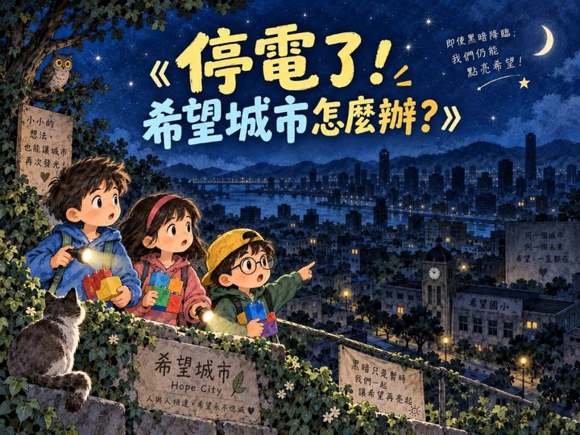
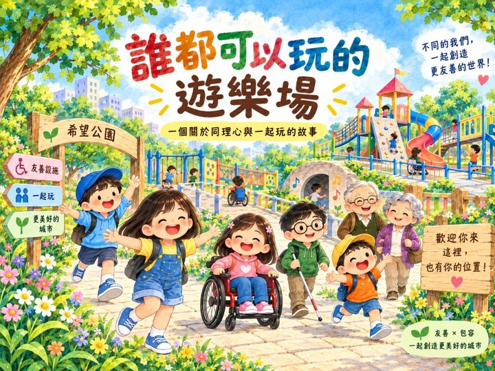
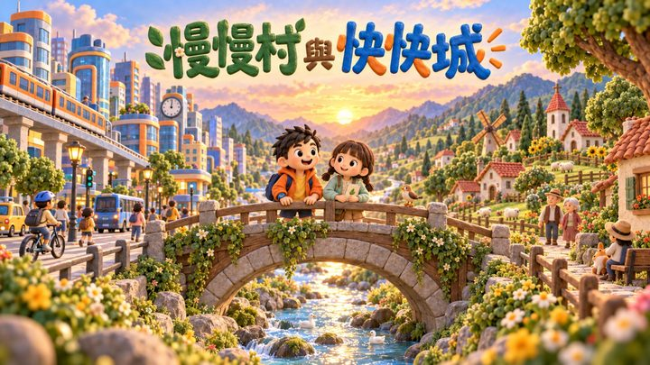

SEL 資源中心
把孩子的情緒能力，一步步鋪成一條路
從情緒認識、正念練習、親子對話到課程活動地圖，每一份資源都能直接帶進課輔班、家庭與社區，讓孩子在被理解的環境裡練習覺察、調節與連結。
這條小徑會一直延伸——之後每加一份新資源，就在小徑上多鋪一顆石頭。
SEL 資源工具包
每張卡片都是一個可以直接帶進課輔班、親子互動或教師培訓的入口，依需要選擇合適的情境工具。
84 張情緒牌卡，六大色系家族。把情緒說清楚，是一種能力——幫孩子建立情緒詞彙，從認識情緒開始。
16 種呼吸法、五感尋寶任務、日常正念儀式。依孩子當下的狀態，快速找到最適合的親子練習。
雙節課教案、教室情境快查、教師引導語。從上課鐘響到大考前，讓正念成為班級日常的共同語言。
五個時間點 × 50 個問題 × 接話建議。讓日常聊天成為素養教育——幫孩子從忙碌的一天中，慢慢回到自己。
108 個 SEL 活動教案，八大課程系列，涵蓋五大核心能力。依家族、能力、系列篩選，點擊查看完整步驟與行動轉化建議。
將 SEL 課程帶進社區——親職講座、情緒課程、積木體驗三大模組，免費扶助弱勢學童，歡迎學校與社區組織洽談合作。
六大情緒家族，41 個可立即使用的陪伴活動。含完整步驟、引導語建議與行動轉化，適合教師、家長與輔導工作者。
以課程活動地圖排出的密集營隊行程——早場牌卡深度學習、午場統整舒緩，六大情緒家族由淺入深。
15 週學期課程排程——每週主課程搭配每日入場小活動，六大情緒家族與各系列穿插編排。點擊活動名稱即可展開完整教案。
舒爾特方格升級版，13 關專注力與情緒調節小遊戲。找數字、記亮燈、認情緒，完成關卡集滿能力徽章，課前 10 分鐘就能玩一輪。
用溫暖的房子意象，記錄孩子的每一次進步。加分、紀錄、查看名單，讓正向回饋成為班級日常的儀式感。
拼積木、開小店、蓋小屋、出發救援！四種冒險，等你來挑戰。在觀察、記憶與嘗試中，找出自己的方法。卡關也沒關係，換個想法，再試一次！
「積」起改變的力量
繪本故事 × 積木建構 × SDGs 的系列課程。每一堂都是一頁課堂投影：故事、討論、計時器、抽卡與教師小抄都在裡面，打開就能帶全班上課。

第 1 堂城市需要 28 格能源，卻只剩 20 格。孩子用積木分配能源、遇見怕冷的奶奶後重新調整，再打造會自己發電的未來能源城。

第 2 堂先蓋一座自己最想玩的遊樂場，再讓樂樂、安安、豆豆、米米和爺爺奶奶走進來。從「如果我是他，我需要什麼？」出發，重新設計讓大家一起玩。

第 3 堂什麼都快的小凱、什麼都慢的小悠，一起修好被沖壞的橋。孩子判斷不同情境需要的速度，再用積木打造一座同時有快空間與慢空間、會呼吸的城市。
建議用電腦接投影機開啟・鍵盤 ← → 翻頁・按 T 打開教師小抄・右上角可切換低／高年級